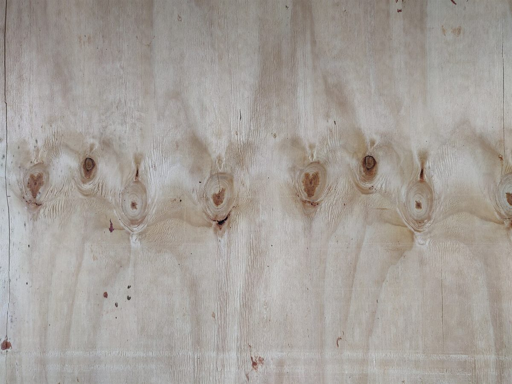

コン
店のこと
お店について確認できているのは、所在地とInstagramのアカウントだけです。
「想像してみる」部分は制作側が想像して書いたもので、お店の実際の様子・考え・メニューとは関係がありません。
確認できていること
- 店名は「hammer cafe(はんまーかふぇ)」、業種はカフェ
- 所在地は千葉県君津市西粟倉130(〒292-1168)
- 電話番号はなし。連絡はInstagramから
- 営業時間・定休日・メニュー・価格・ご予約・駐車場は準備中

想像してみる
「hammer」という名前から
屋号の由来は分かりません。制作側は、金槌という言葉から「ものを組み立てる手」や「トントンと響くリズム」を連想しました。ただの連想なので、お店が何かをつくる場所なのか、ゆっくり過ごす場所なのかも分かりません。下の三枚は、木や光の質感を並べただけのイメージ写真です。

